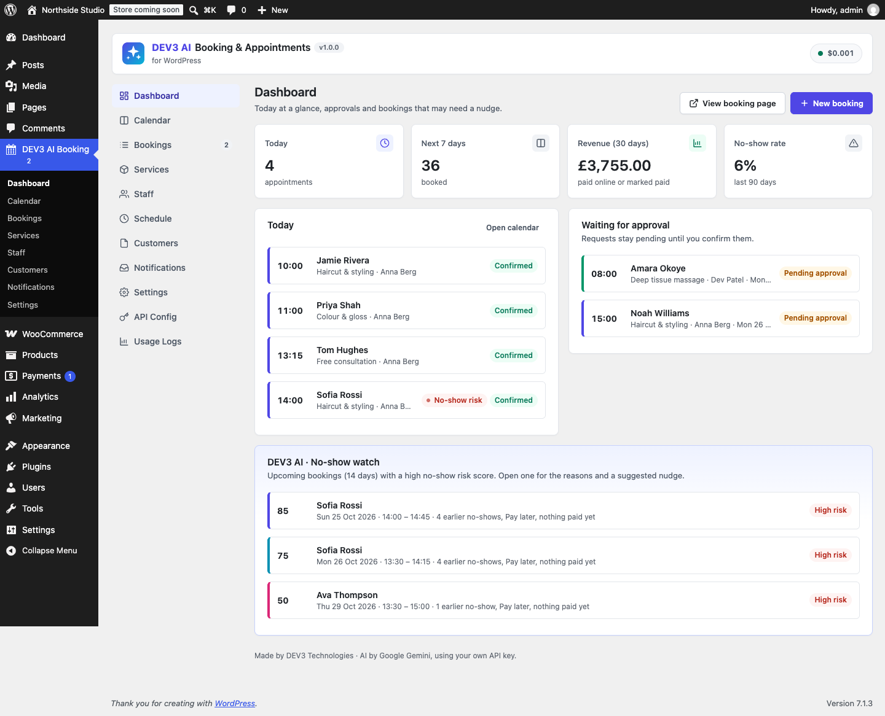
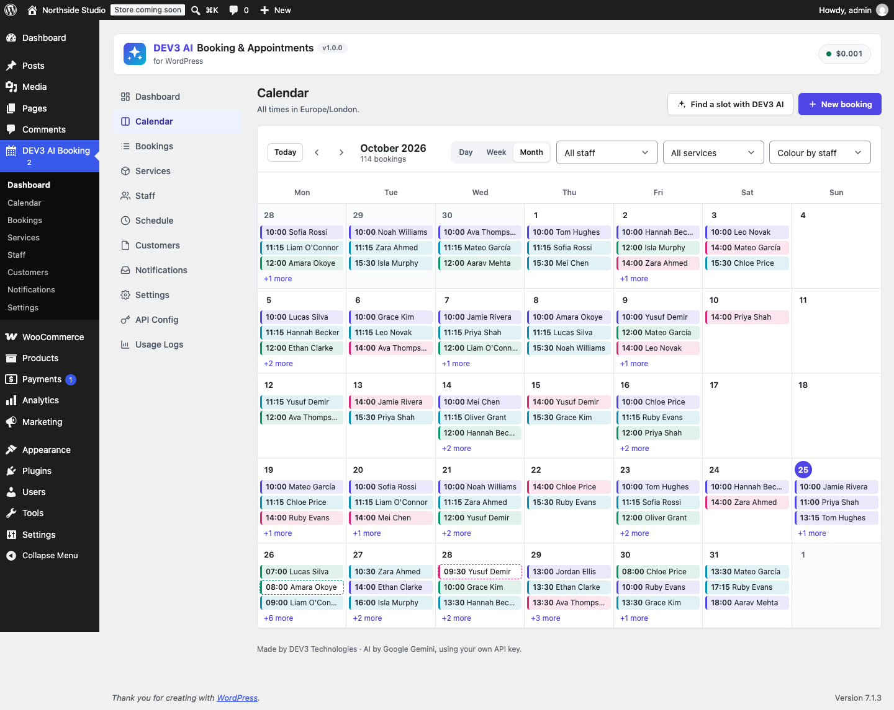
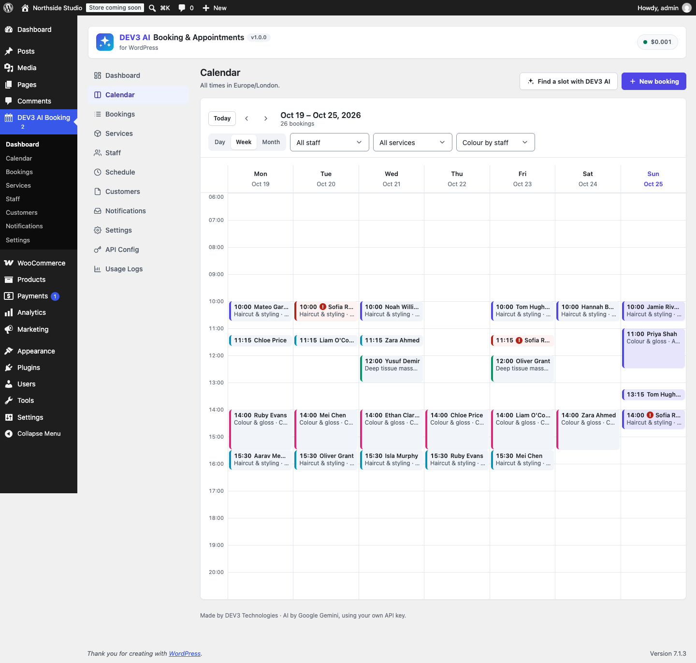
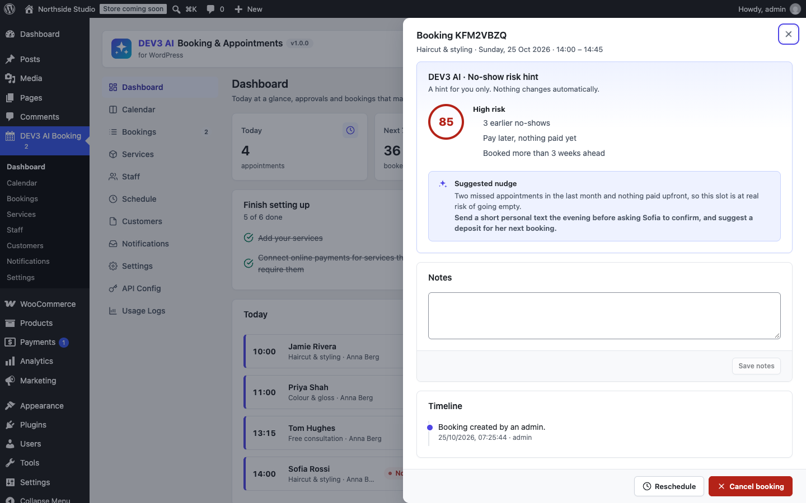
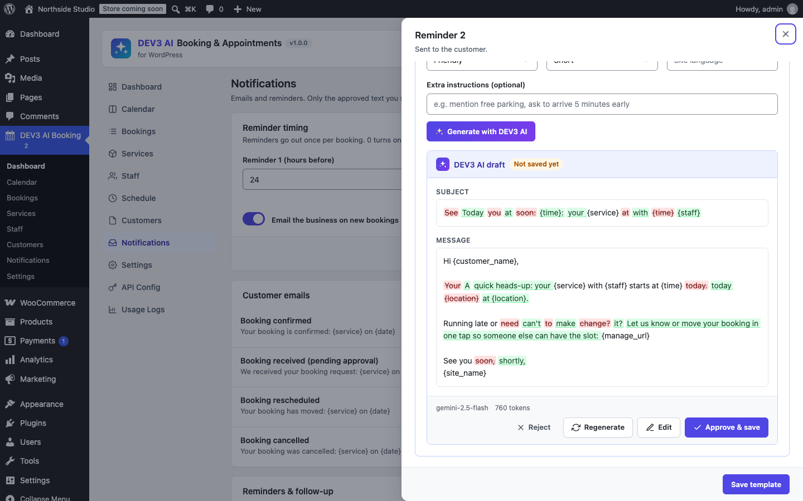
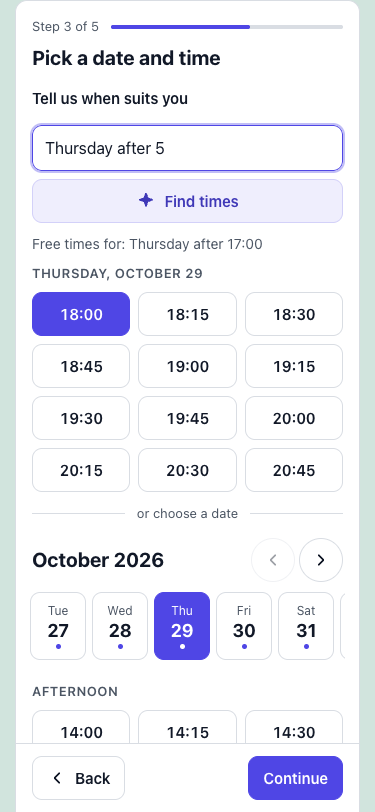
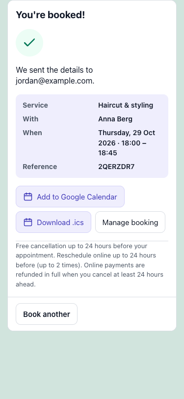

Installation
- Requirements: WordPress 6.0+, PHP 7.4+ (tested on 8.3). WooCommerce 8.0+ is optional (for checkout payments).
- Plugins › Add New › Upload Plugin, choose
dev3-ai-booking-appointments.zip, install and activate. - Activation creates two pages: Book an appointment (Booking form block) and My bookings (My bookings block). Emailed "Manage booking" links open the My bookings page.
- Open DEV3 AI Booking in the admin menu.
Quick start
- Schedule: set business hours, breaks and holidays.
- Services: add what customers book (duration, price, deposit, capacity, buffers).
- Staff: add people, tick their services, and use business hours or give them their own.
- Settings › General: business name, email and time zone. Settings › Payments: pick pay later, Stripe and/or WooCommerce.
- Open the booking page on your phone and book a test appointment.
Services
| Field | What it does |
|---|---|
| Duration | Length of the appointment in real minutes (5–720). |
| Price / Deposit (%) | 0 = free (no payment step). A deposit takes that percentage online; the rest is due at the appointment. |
| Capacity | 1 = private appointment. More than 1 makes a group class: customers share seats at the same start time. |
| Buffer before / after | Time kept free around the appointment (cleaning, travel). Buffers never overlap another booking of the same staff member. |
| Slot step | How often start times are offered (e.g. every 15 min). 0 = the default in Settings. |
| Minimum notice / book up to | How soon and how far ahead customers can book. -1 = the defaults. |
| Online payment | Optional (online or pay later), Required (online only) or Off. |
| Visibility | Hidden services can still be booked by admins. |
Services with bookings are archived (not deleted) so history stays intact.
Staff & schedules
- Profile: name, private email (receives booking emails), phone, short bio and colour (shown in the widget and calendar), time zone.
- Working hours: use the business hours or set weekly hours (several ranges per day) and breaks.
- Time off: whole days or a time window, special working hours for a date (replaces the weekly hours), optional yearly repeat.
- Calendar feed: a private iCal URL to subscribe in Google, Apple or Outlook calendar. Create a new link at any time; the old one stops working.
- Schedule screen: business hours, breaks and closures/holidays for everyone.
Availability rules
- Slots are aligned to the wall clock in the staff member's time zone (09:00, 09:15 …). Durations and buffers are real minutes.
- Daylight saving: times that do not exist (clocks go forward) are skipped; repeated times (clocks go back) are offered once. A shift that spans the change keeps its real length.
- Customers see times in their own time zone (detected in the browser, switchable). Dates are grouped by the customer's local day.
- Unpaid online bookings hold their time for the hold period (Settings › Booking rules; at least 35 minutes for Stripe and 60 for WooCommerce), then expire.
- Bookings are written under a database lock per staff member and re-checked, so two people cannot take the same time.
- "Any available": the time is offered if anyone who performs the service is free; the person with the fewest bookings that day is assigned.
Booking widget
Add the Booking form block, or the shortcode:
[dev3bk_booking]
[dev3bk_booking service="3"] preselect a service
[dev3bk_booking service="3" staff="7"] preselect a service and staff member
[dev3bk_booking category="Hair"] only one categorySteps: Service → Staff ("Any available" or a person) → Date & time ("Tell us when suits you" plus a date strip and Morning/Afternoon/Evening slots) → Your details → Payment & review → Confirmation with Google Calendar, .ics and manage links. Steps are skipped when there is only one choice. The widget is mobile-first with a sticky action bar, 44 px targets, theme fonts and an accent colour (Settings › Widget). It loads only on pages that contain it (about 9 KB of JavaScript gzipped).
Payments
Pay at the appointment
The booking is confirmed (or pending your approval) and marked unpaid. Mark it paid from the booking.
Stripe
- Settings › Payments: turn on Stripe and enter the publishable and secret keys (test keys start with
sk_test_). Keys are stored encrypted. - In the Stripe dashboard add a webhook to the URL shown in Settings with the events
checkout.session.completed,checkout.session.expiredandcharge.refunded, and paste the signing secret. - Customers pay on Stripe Checkout. The booking is confirmed when the payment succeeds (webhook, or the check when they return).
- Customer cancellations inside the refund window are refunded automatically (Settings › Policies).
WooCommerce checkout
With WooCommerce active, turn on WooCommerce checkout. The appointment goes into the cart as a hidden "Appointment" product with the booking details, and your gateways, taxes and emails apply. Paid order → booking confirmed; on-hold (bank transfer) → kept as pending; cancelled/failed → time released; refunded → booking refunded. HPOS and the block cart/checkout are supported. Customers also get My Account › Appointments.
Customer area & policies
The My bookings block (or [dev3bk_my_bookings]) lists a logged-in customer's bookings. Guests open one booking with the secure link in their email. Customers can reschedule (only real free times) and cancel, within the rules in Settings › Policies: cancel/reschedule cutoffs, maximum reschedules, refund window and optional policy text.
Emails & reminders
Notifications lists every email: confirmation, pending approval, rescheduled, cancelled, reminder 1, reminder 2, follow-up, and admin/staff new/cancelled/rescheduled. Edit subject and message with placeholders:
{customer_name} {service} {staff} {date} {time} {timezone} {duration} {location} {price} {amount_due} {ref} {manage_url} {ics_url} {google_url} {site_name} {policy}
Customer emails attach an .ics file. Reminders run every 5 minutes (WP-Cron) and go out once per booking at the hours you set; a booking made inside a reminder's window skips that reminder. Only the text saved here is ever sent.
Admin calendar & bookings
- Day (one column per staff member), Week and Month views, staff and service filters, colour by staff or service. On phones day/week become an agenda and month shows dots with a day list.
- Click an empty hour to book it; click a booking to open it: confirm, complete, no-show, reschedule, cancel (with refund), mark paid, resend the confirmation, send a reminder, notes and timeline.
- New booking shows real free times, or override availability for a walk-in.
- Bookings: status tabs, search, filters, CSV export, "Confirm all shown" for pending requests.
- Customers: history, no-shows, paid total and private notes.
DEV3 AI features
| Feature | How it works | Safety |
|---|---|---|
| Natural-language booking | Customers (and admins via "Find a slot with DEV3 AI") type "Tuesday after 5 with Anna". DEV3 AI turns it into a date range, weekdays, a time window, service and staff. | The AI never invents times: the server validates the result and returns only free slots from the availability engine. Without a key, a built-in rule parser answers instead. |
| AI reminder copy | Notifications › Edit › Write with DEV3 AI: tone, length, language and instructions. | You see a diff and approve, edit or reject. Unknown placeholders are removed and required ones are checked. Drafts are never sent. |
| No-show risk hint | A rule-based score (earlier no-shows, late cancellations, first visit, unpaid, long lead time, reschedules) on every booking, with an optional DEV3 AI explanation and suggested nudge. | A hint for you only; nothing happens automatically. Only anonymised facts are sent (no names or emails). |
Turn features on or off in Settings › DEV3 AI & data. Storefront AI also follows the "storefront AI" switch, rate limits and monthly budget in API Config.
Google Gemini API key
- Create a key at Google AI Studio.
- Paste it in DEV3 AI Booking › API Config (stored encrypted), or define
DEV3BK_GEMINI_API_KEYinwp-config.php. - Optionally set a monthly budget; usage and estimated cost appear in Usage Logs.
Privacy
Bookings and customers are stored in your database. WordPress's export/erase tools include appointment data (erasing anonymises the customer and clears booking notes). Booking requests typed into the widget are sent to Google Gemini only when DEV3 AI is on. A privacy-policy snippet is added to Settings › Privacy. Data is deleted on uninstall only if you turn that on.
Hooks for developers
| Hook | Type | Use |
|---|---|---|
dev3bk_slots | filter | Change computed slots ( $slots, $service, $opts ). |
dev3bk_assign_staff | filter | Order of staff tried for "any staff" ( $ids, $ts, $service ). |
dev3bk_booking_amount | filter | Total price of a new booking ( $total, $service, $input ). |
dev3bk_policy_allows | filter | Allow/deny a customer cancel or reschedule ( $result, $action, $booking ). |
dev3bk_email_vars | filter | Email placeholder values ( $vars, $booking ). |
dev3bk_risk_score | filter | No-show score ( $score, $features ). |
dev3bk_now | filter | Current time (testing). |
dev3bk_booking_created, dev3bk_booking_status_changed, dev3bk_booking_rescheduled, dev3bk_booking_paid | actions | React to booking changes. |
dev3bk_prompt_nl_booking, dev3bk_prompt_template_copy, dev3bk_prompt_risk_hint | filters | Override DEV3 AI prompts. |
REST API (dev3bk/v1)
Public: GET public/catalog, GET public/availability, POST public/nl, POST public/bookings, GET public/bookings/<ref>?key=, POST …/cancel, POST …/reschedule, POST …/payment, GET …/ics, GET public/my-bookings, GET feed/<staff>?token=, POST stripe/webhook. Admin (manage_options + nonce): dashboard, services, staff, exceptions, schedule, bookings (+ export, bulk, status, reschedule, payment, notify, risk), calendar, availability, ai/nl, customers, templates, payments/stripe, pages.
FAQ
Do I need WooCommerce?
No. It is only used if you want WooCommerce checkout payments.
Can I use it without AI?
Yes. Everything works without a key; natural-language booking falls back to the rule parser.
Does it sync with Google Calendar?
Each staff member has a private iCal feed you can subscribe to, and customers get Google Calendar links and .ics files. Two-way sync is planned.
Reminders are not sent.
Reminders use WP-Cron. On low-traffic sites set up a real cron job that calls wp-cron.php every 5 minutes, and check your site can send email.
The manage link opens the home page.
Settings › Widget & pages › Create missing pages, or set the account page ID.
Changelog
1.0.0
Initial release.